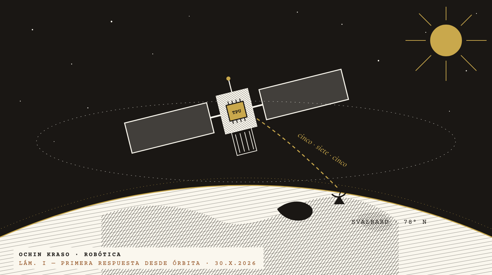
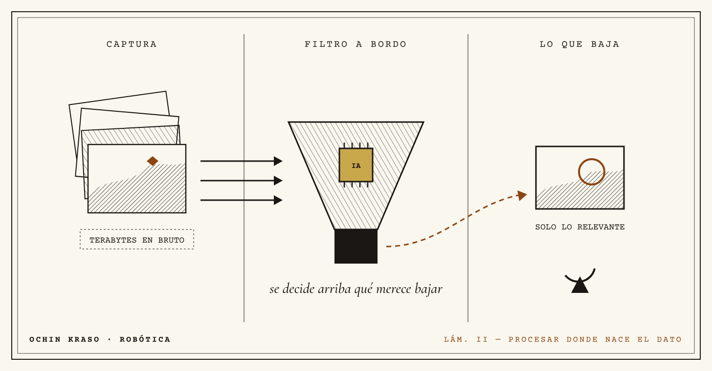
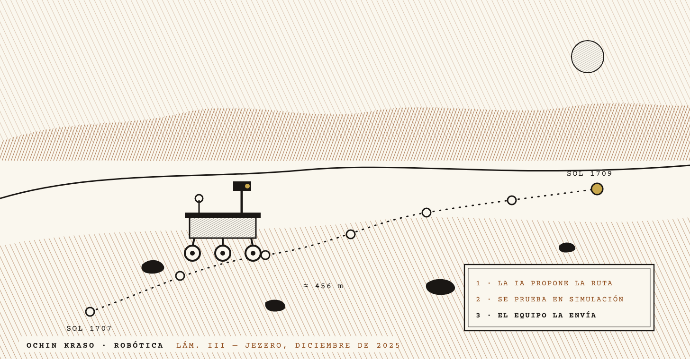
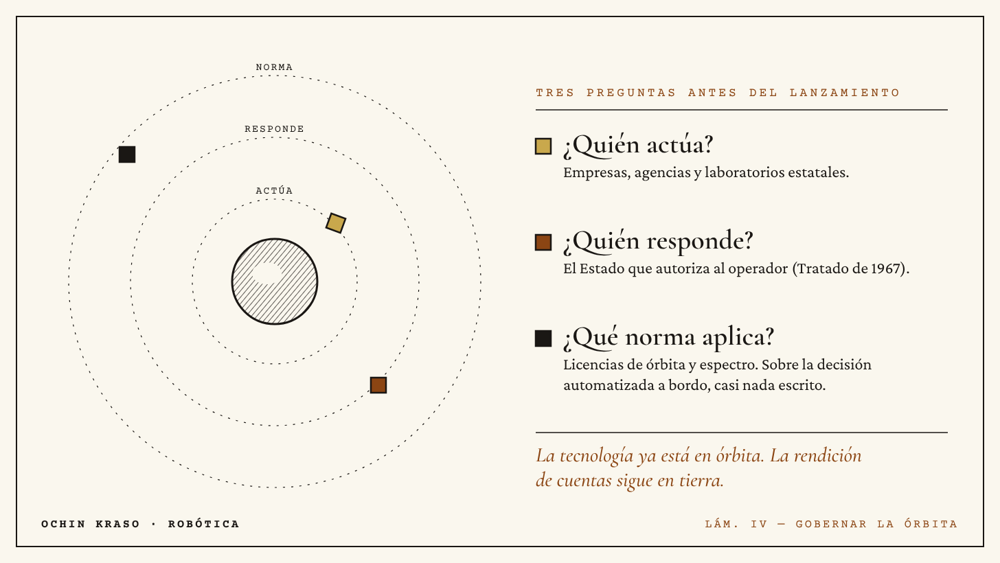

<title>La IA en órbita</title>
<meta name="claude:viewport-fit-sides" content="cover">
<link rel="preconnect" href="https://fonts.googleapis.com">
<link rel="preconnect" href="https://fonts.gstatic.com" crossorigin>
<link rel="stylesheet" href="https://fonts.googleapis.com/css2?family=Cormorant+Garamond:ital,wght@0,500;0,600;0,700;1,500&family=Crimson+Pro:ital,wght@0,400;0,600;1,400&family=Courier+Prime:wght@400;700&display=swap">
<style>
/* Layout: columna de lectura de newsletter (760px) sobre papel, con láminas grabadas a sangre de columna. Design System Ochin Kraso v1.0.0 */
:root {
  --paper: #FAF7EE;
  --ink: #1A1714;
  --accent: #8B4513;
  --gold: #C9A84C;
  --rule: #CFC6B4;
  --soft: #4A423A;
  --panel: #F2ECDD;
  --font-display: "Cormorant Garamond", Georgia, "Times New Roman", serif;
  --font-body: "Crimson Pro", Georgia, "Times New Roman", serif;
  --font-mono: "Courier Prime", "Courier New", Courier, monospace;
  --col: 760px;
}
@media (prefers-color-scheme: dark) {
  :root:not([data-theme="light"]) {
    --paper: #17140F; --ink: #EFE8D8; --accent: #D08A55; --gold: #D6B862;
    --rule: #3A332A; --soft: #BDB2A0; --panel: #221D16; color-scheme: dark;
  }
}
:root[data-theme="dark"] {
  --paper: #17140F; --ink: #EFE8D8; --accent: #D08A55; --gold: #D6B862;
  --rule: #3A332A; --soft: #BDB2A0; --panel: #221D16; color-scheme: dark;
}
body {
  background: var(--paper);
  color: var(--ink);
  font-family: var(--font-body);
  font-size: 22px;
  line-height: 1.7;
  padding-left: max(16px, env(safe-area-inset-left, 0px));
  padding-right: max(16px, env(safe-area-inset-right, 0px));
}
.wrap { max-width: var(--col); margin: 0 auto; padding-block: 40px 72px; }
.mast {
  display: flex; flex-wrap: wrap; justify-content: space-between; gap: 8px 24px;
  font-family: var(--font-mono); font-size: 13px; letter-spacing: .22em; text-transform: uppercase;
  border-top: 3px solid var(--ink); border-bottom: 1px solid var(--ink); padding-block: 10px;
}
.mast b { font-weight: 700; }
.mast span { color: var(--accent); }
h1 {
  font-family: var(--font-display); font-weight: 600; font-size: clamp(38px, 6.4vw, 60px);
  line-height: 1.06; letter-spacing: -.01em; margin: 36px 0 16px; text-wrap: balance;
}
.dek { font-family: var(--font-display); font-style: italic; font-size: 27px; line-height: 1.35; color: var(--soft); margin: 0 0 24px; text-wrap: balance; }
.byline { font-family: var(--font-mono); font-size: 14px; letter-spacing: .12em; text-transform: uppercase; color: var(--soft); margin: 0 0 32px; }
figure { margin: 36px 0; }
figure img { display: block; width: 100%; max-width: 100%; height: auto; border: 1px solid var(--rule); }
figcaption { font-family: var(--font-mono); font-size: 14px; line-height: 1.5; color: var(--soft); margin-top: 10px; }
figcaption b { color: var(--accent); font-weight: 700; letter-spacing: .1em; }
.lead::first-letter {
  font-family: var(--font-display); font-weight: 700; float: left; font-size: 92px; line-height: .78;
  padding: 8px 10px 0 0; color: var(--accent);
}
p { margin: 0 0 22px; }
h2 {
  font-family: var(--font-display); font-weight: 600; font-size: 36px; line-height: 1.15;
  margin: 52px 0 18px; text-wrap: balance; display: flex; align-items: baseline; gap: 14px;
}
h2::before { content: ""; flex: 0 0 22px; height: 2px; background: var(--gold); transform: translateY(-10px); }
.front { margin: 0 0 22px; }
.front .k { font-family: var(--font-mono); font-size: 13px; letter-spacing: .2em; text-transform: uppercase; color: var(--accent); display: block; margin-bottom: 2px; }
.front .k b { color: var(--ink); }
.note { font-style: italic; color: var(--soft); }
ul.fine { list-style: none; padding: 0; margin: 0 0 22px; display: grid; gap: 14px; }
ul.fine li { padding-left: 26px; position: relative; }
ul.fine li::before { content: ""; position: absolute; left: 2px; top: .62em; width: 10px; height: 10px; border: 2px solid var(--accent); transform: rotate(45deg); }
.plantilla { background: var(--panel); border: 1px solid var(--ink); outline: 1px solid var(--ink); outline-offset: 5px; padding: 26px 24px 10px; margin: 30px 6px 34px; }
.plantilla .k { font-family: var(--font-mono); font-size: 13px; letter-spacing: .22em; text-transform: uppercase; color: var(--accent); margin: 0 0 6px; }
.plantilla h3 { font-family: var(--font-display); font-size: 30px; font-weight: 600; line-height: 1.15; margin: 0 0 16px; text-wrap: balance; }
.tbl { overflow-x: auto; }
table { width: 100%; border-collapse: collapse; font-size: 19px; line-height: 1.45; }
th { font-family: var(--font-mono); font-size: 12px; letter-spacing: .18em; text-transform: uppercase; text-align: left; font-weight: 700; padding: 8px 10px 8px 0; border-bottom: 2px solid var(--ink); }
td { vertical-align: top; padding: 12px 12px 12px 0; border-bottom: 1px solid var(--rule); }
td:first-child { color: var(--soft); width: 42%; }
tr:last-child td { border-bottom: 0; }
.close { font-family: var(--font-display); font-size: 30px; line-height: 1.3; font-style: italic; color: var(--accent); border-top: 1px solid var(--ink); border-bottom: 1px solid var(--ink); padding-block: 22px; margin: 40px 0 26px; text-wrap: balance; }
.ask { font-weight: 600; }
.video { margin: 48px 0 40px; border: 2px dashed var(--accent); padding: 28px 24px; display: grid; grid-template-columns: 72px 1fr; gap: 20px; align-items: center; }
.video .play { width: 72px; height: 72px; border-radius: 50%; border: 2px solid var(--ink); display: grid; place-items: center; }
.video .play svg { width: 26px; height: 26px; margin-left: 5px; }
.video .k { font-family: var(--font-mono); font-size: 13px; letter-spacing: .22em; text-transform: uppercase; color: var(--accent); margin: 0; }
.video p { margin: 4px 0 0; font-size: 19px; line-height: 1.45; }
.video > div { min-width: 0; }
.sources { font-size: 17px; line-height: 1.5; border-top: 3px solid var(--ink); padding-top: 18px; margin-top: 30px; }
.sources h4 { font-family: var(--font-mono); font-size: 13px; letter-spacing: .22em; text-transform: uppercase; margin: 0 0 12px; }
.sources ol { margin: 0 0 18px; padding-left: 22px; display: grid; gap: 6px; }
.sources a { color: var(--accent); text-underline-offset: 3px; overflow-wrap: anywhere; }
.sources a:focus-visible { outline: 2px solid var(--gold); outline-offset: 2px; }
.colophon { font-family: var(--font-mono); font-size: 13px; letter-spacing: .14em; text-transform: uppercase; color: var(--soft); text-align: center; margin-top: 36px; }
@media (max-width: 560px) {
  body { font-size: 19px; }
  .dek { font-size: 23px; }
  h2 { font-size: 30px; }
  .lead::first-letter { font-size: 74px; }
  .video { grid-template-columns: 1fr; }
  .plantilla { padding: 20px 16px 6px; }
  td:first-child { width: 46%; }
}
</style>

<main class="wrap">
  <div class="mast"><b>Ochin Kraso · Robótica</b><span>Gobernanza en órbita</span></div>

  <h1>La IA ya responde desde la órbita. Falta saber quién responde por ella</h1>
  <p class="dek">Un haiku enviado desde un satélite de Google abre la carrera por llevar el cómputo al espacio. La tecnología va deprisa. La gobernanza sigue en la plataforma de lanzamiento.</p>
  <p class="byline">Mariano Silla · 4 de noviembre de 2026 · 6 min</p>

  <figure>
    
    <figcaption><b>Lámina I.</b> El prototipo de Project Suncatcher devolvió su primera respuesta al pasar sobre Svalbard (Noruega).</figcaption>
  </figure>

  <p class="lead">Esta semana un chip de inteligencia artificial ha contestado a un mensaje desde la órbita terrestre. Era un haiku: tres versos y diecisiete sílabas. Como poesía no pasará a la historia. Como señal, sí, porque es la primera prueba seria de que el espacio puede acabar siendo parte de la infraestructura de la IA.</p>
  <p>Mi lectura es la de siempre: el reto está menos en la tecnología que en la gobernanza. En órbita, además, los errores son más caros y quedan más lejos.</p>

  <h2>Qué ha pasado</h2>
  <p>El 30 de octubre, Google anunció que el prototipo de <strong>Project Suncatcher</strong> había superado su hito «Hello World». El satélite, construido con Planet y lanzado el 1 de octubre, lleva chips TPU de clase centro de datos. Desde tierra se le envió una petición para que su modelo abierto <strong>Gemma 4</strong> escribiera un haiku. La respuesta llegó cuando el satélite pasó sobre <strong>Svalbard (Noruega)</strong>.</p>
  <p>Conviene leer bien la afirmación. Google no dice que sea el primer modelo de IA que funciona en el espacio. Dice que es la primera respuesta de un TPU de clase centro de datos en órbita. Tampoco ha publicado datos de rendimiento. Lo siguiente son pruebas térmicas y de radiación y, en 2027, dos satélites conectados entre sí.</p>

  <h2>Cinco frentes abiertos</h2>
  <div class="front"><span class="k"><b>1</b> · Centros de datos en órbita</span>Google no está solo. SpaceX pidió en enero a la Comisión Federal de Comunicaciones de EE.&nbsp;UU. (FCC) autorización para hasta <strong>un millón</strong> de satélites de computación. Blue Origin, con su Project Sunrise, para <strong>51.600</strong>. Starcloud, por su parte, ya entrenó un modelo de lenguaje pequeño en órbita con una GPU Nvidia H100 en 2025, según la propia empresa.</div>
  <div class="front"><span class="k"><b>2</b> · IA a bordo: decidir antes de enviar</span>Un satélite genera más datos de los que puede bajar a tierra. La salida es analizarlos arriba y enviar solo lo relevante. China lo está probando con la constelación <strong>Three-Body</strong> del Zhejiang Lab: 12 satélites lanzados en mayo de 2025, casi nueve meses de pruebas y diez modelos de IA desplegados en órbita. El plan completo supera los 1.000 satélites.</div>

  <figure>
    
    <figcaption><b>Lámina II.</b> Procesar donde nace el dato: el satélite filtra a bordo y solo baja lo que importa.</figcaption>
  </figure>

  <div class="front"><span class="k"><b>3</b> · Exploración con IA al volante</span>Los días 8 y 10 de diciembre de 2025, el rover <strong>Perseverance</strong> recorrió unos 456 metros en Marte siguiendo una ruta trazada por IA. El Jet Propulsion Laboratory (JPL) de la NASA usó modelos Claude, de Anthropic, para proponer los puntos de paso. Antes de enviarla, la ruta pasó por la simulación previa que se aplica a cualquier trayecto del rover.</div>

  <figure>
    
    <figcaption><b>Lámina III.</b> La IA propone, la simulación comprueba y el equipo decide.</figcaption>
  </figure>

  <div class="front"><span class="k"><b>4</b> · Tráfico espacial</span>Cada satélite nuevo complica la circulación en órbita. La Agencia Espacial Europea (ESA) trabaja en sistemas de IA que ayudan a decidir cuándo hay que maniobrar para esquivar un objeto. Hoy apoyan a los equipos humanos; no los sustituyen.</div>
  <div class="front"><span class="k"><b>5</b> · Europa quiere su parte</span>El estudio <strong>ASCEND</strong>, coordinado por Thales Alenia Space para la Comisión Europea, concluyó en 2024 que los centros de datos orbitales europeos son viables, con condiciones. Su meta es 1 gigavatio de capacidad antes de 2050. La condición principal: un lanzador diez veces menos contaminante en todo su ciclo de vida.</div>

  <h2>Quién actúa, quién responde, qué norma aplica</h2>
  <p>Aquí está lo que de verdad interesa a cualquiera que dirija equipos o tome decisiones con IA.</p>
  <p><strong>Quién actúa.</strong> Empresas privadas (Google, SpaceX, Blue Origin, Starcloud), agencias públicas (NASA, ESA) y laboratorios estatales (Zhejiang Lab). Son actores con intereses, calendarios y controles muy distintos.</p>
  <p><strong>Quién responde.</strong> El Tratado del Espacio Exterior de 1967 lo deja claro en su artículo VI: cada Estado responde internacionalmente de las actividades espaciales nacionales, también de las que realizan empresas privadas, y debe autorizarlas y supervisarlas de forma continua. El Convenio sobre responsabilidad de 1972 cubre los daños causados por objetos espaciales.</p>
  <p><strong>Qué norma aplica.</strong> Licencias de órbita y de espectro, que en EE.&nbsp;UU. concede la FCC. Pedirlas no es obtenerlas: las solicitudes de SpaceX y Blue Origin siguen siendo eso, solicitudes. En la Unión Europea, la Comisión propuso en junio de 2025 una Ley Espacial común.</p>
  <p><strong>El hueco.</strong> Esos textos se escribieron pensando en objetos, no en decisiones. Cuando un modelo decide a bordo qué imagen se descarta, qué maniobra se ejecuta o qué dato baja a tierra, no hay una regla específica que diga quién valida ese criterio ni cómo se audita. <span class="note">Esto es una lectura propia, no una cita de ninguna norma.</span></p>

  <figure>
    
    <figcaption><b>Lámina IV.</b> La tecnología ya está en órbita. La rendición de cuentas sigue en tierra.</figcaption>
  </figure>

  <h2>La letra pequeña</h2>
  <ul class="fine">
    <li><strong>Un haiku demuestra que funciona, no que salga a cuenta.</strong> Google lo presenta como una apuesta de investigación a largo plazo.</li>
    <li><strong>El calor es el gran obstáculo.</strong> En el vacío no hay aire que refrigere: todo el calor se tiene que disipar con radiadores, y eso pesa y cuesta.</li>
    <li><strong>Los chips envejecen antes que los satélites.</strong> El hardware de IA se renueva cada pocos años; un satélite se diseña para durar más. Lo que hoy es puntero, en órbita se queda atrás.</li>
    <li><strong>La energía marca el ritmo.</strong> La Agencia Internacional de la Energía estima que el consumo eléctrico de los centros de datos pasará de unos 415&nbsp;TWh en 2024 a unos 945&nbsp;TWh en 2030 en su escenario base. Esa presión es la que empuja a mirar hacia arriba.</li>
  </ul>

  <section class="plantilla" aria-labelledby="plt">
    <p class="k">Plantilla reutilizable</p>
    <h3 id="plt">Cuatro preguntas de la órbita para tu oficina</h3>
    <p>No hace falta un cohete para aplicar lo que estas misiones enseñan. Lleva estas preguntas a tu próxima reunión de proyecto con IA.</p>
    <div class="tbl">
      <table>
        <thead><tr><th scope="col">Lección de la órbita</th><th scope="col">Pregunta para tu equipo</th></tr></thead>
        <tbody>
          <tr><td>El satélite filtra a bordo y solo baja lo relevante</td><td>¿Qué datos salen de nuestra casa, hacia qué proveedor y por qué?</td></tr>
          <tr><td>Perseverance no recibió la ruta sin pasar por simulación</td><td>¿Dónde probamos lo que propone la IA antes de que toque un cliente o un proceso real?</td></tr>
          <tr><td>Google usó un modelo abierto y compacto</td><td>¿Estamos pagando un modelo grande para una tarea pequeña?</td></tr>
          <tr><td>Nadie lanza sin licencia ni Estado responsable</td><td>¿Quién ha autorizado este uso y quién responde si falla? Con nombre y apellidos.</td></tr>
        </tbody>
      </table>
    </div>
  </section>

  <p class="close">La IA en la oficina no falla por la tecnología, falla por la gobernanza. En órbita pasa lo mismo, solo que más lejos y con menos margen para corregir.</p>
  <p class="ask">¿Qué proceso de tu trabajo te gustaría que la IA filtrara antes de que llegue a tu mesa, y quién debería validar ese filtro? Te leo en comentarios.</p>

  <section class="video" aria-label="Vídeo">
    <div class="play" aria-hidden="true"><svg viewBox="0 0 24 24"><path d="M4 2 L22 12 L4 22 Z" fill="currentColor"/></svg></div>
    <div>
      <p class="k">Para verlo · vídeo pendiente</p>
      <p>Aquí va el vídeo. En Substack, pega la URL en una línea sola y se inserta automáticamente.</p>
    </div>
  </section>

  <div class="sources">
    <h4>Fuentes</h4>
    <ol>
      <li><a href="https://blog.google/innovation-and-ai/models-and-research/google-research/project-suncatcher-satellite-response/">Google · Project Suncatcher, primera respuesta desde órbita (30/10/2026)</a></li>
      <li><a href="https://anthropic.com/features/claude-on-mars">Anthropic · Claude en Marte</a></li>
      <li><a href="https://www.space.com/space-exploration/mars-rovers/nasas-perseverance-mars-rover-completes-its-1st-drive-planned-by-ai">Space.com · Primer trayecto de Perseverance planificado por IA</a></li>
      <li><a href="https://www.theregister.com/2026/03/23/spacex_amazon_orbital_datacenters/">The Register · SpaceX y Amazon, disputa por los centros de datos orbitales</a></li>
      <li><a href="https://www.datacenterknowledge.com/next-gen-data-centers/bezos-blue-origin-enters-the-data-center-space-race">Data Center Knowledge · Blue Origin, Project Sunrise</a></li>
      <li><a href="https://news.cgtn.com/news/2026-02-14/China-demonstrates-AI-computing-power-in-outer-space-1KKLi5q1UPe/p.html">CGTN · Constelación Three-Body</a></li>
      <li><a href="https://theengineer.co.uk/content/news/feasibility-study-on-space-based-data-centres-shows-promising-results">The Engineer · Estudio ASCEND</a></li>
      <li><a href="https://www.iea.org/reports/energy-and-ai">AIE · Energía e IA</a></li>
      <li><a href="https://www.unoosa.org/oosa/en/ourwork/spacelaw/treaties/outerspacetreaty.html">UNOOSA · Tratado del Espacio Exterior</a></li>
    </ol>
    <p class="note">Punto de partida: «Google ya tiene un chip de IA en órbita: 6 tendencias que vienen», IA para todos (4/11/2026). Datos contrastados con las fuentes anteriores.</p>
  </div>

  <p class="colophon">Ochin Kraso · Robótica · marianosilla.substack.com</p>
</main>
